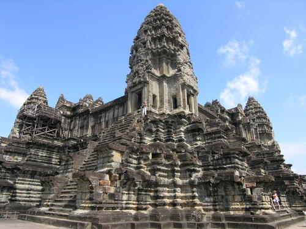

Стилот на Angkor Wat
Angkor Wat е прав пример за класичниот стил на Khmer-архитектурата, Angkor Wat-стил по што го добил името. Во 12ти век Khmer архитектите станаа искусни и кафлификувани за користење на песочник наместо тула како главен градежен материјал. Повеќето видни области се од песочни блокови додека латеритиот бил употребуван за надворешните ѕидови и за скриените делови. Сврзубачкиот елемент кој што бил користен за да ги сврзе болоковите сеуште не е откриен, иако сe епретпоставува дека се природни смоли или гасена вар. Angkor Wat е особено ценет за хармонијата на својот дизајн, кој е споредуван со архитектуратана античките Грци и Рим.  Според Maurice Glaize, истражувач во средината на 20ти век во Angkor, храмот ” постигнува класично совршенство за неговите фино избалансирани елементи и убаво уредените пропорции. Тоа е дело составено од моќ, единство и стил.” Архитектонски елементите карактеристични за стилот вклучуваат: кули во облик на пупки од лотос, пола галерии за пошироки ходници, аксијални галерии за повразување кабини и крстести тераси кои с епојавуваат на главната оска на храмот. Другите елементи на дизајнот биле уништени од грабежите и текот на времето, вклучувајќи позлатем малтер на кулите, позлатени ликови на бац-рејлефи, дрвени тавански панели и врати.